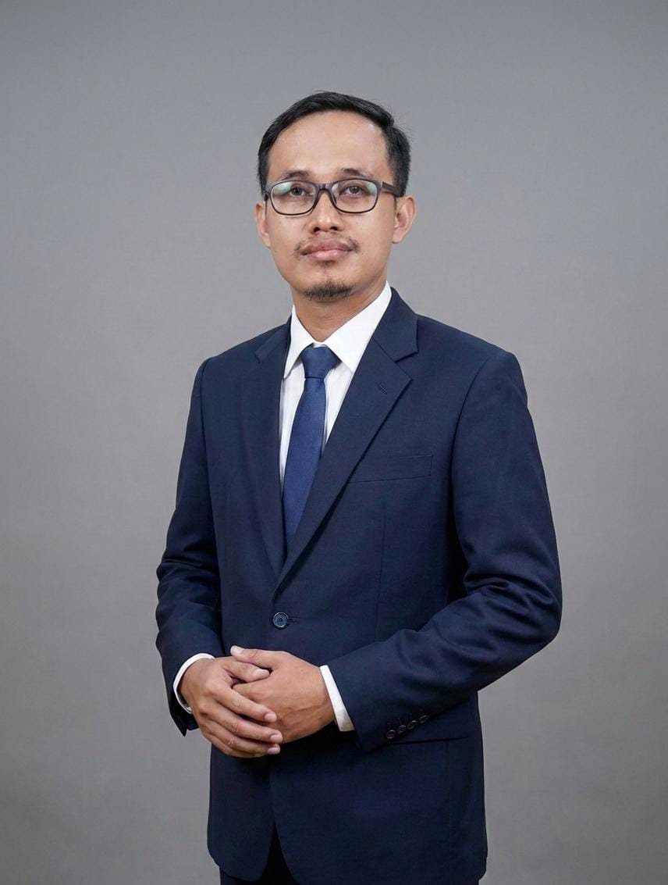

Mewujudkan Pelajar Indonesia yang Unggul,
Kompeten, dan Berakhlak Mulia
Pesan singkat untuk siswa, orang tua, dan masyarakat.
"Assalamu’alaikum Warahmatullahi Wabarakatuh, Selamat pagi dan salam sejahtera bagi kita semua. Selamat datang di website resmi sekolah kami, wadah informasi, komunikasi, dan transparansi bagi seluruh masyarakat. Di era digital ini, kami berkomitmen memanfaatkan teknologi untuk mendukung proses belajar yang inovatif, aman, dan berkarakter demi mencetak generasi berprestasi. Melalui situs ini, Anda dapat mengakses berbagai program akademis, capaian prestasi, serta kegiatan sekolah secara cepat dan akurat. Kami mengajak seluruh guru, siswa, orang tua, dan alumni untuk terus bersinergi dan berkolaborasi demi kemajuan pendidikan di lembaga yang kita cintai ini. Terima kasih atas kunjungan Anda, mari bersama-sama mengukir prestasi demi masa depan bangsa yang gemilang. Wassalamu’alaikum Warahmatullahi Wabarakatuh."

Ringkasan data siswa dan guru

Siswa belajar melalui proyek lintas mata pelajaran agar mampu meneliti, memecahkan masalah, dan mempresentasikan karya.

Praktikum sains dibuat dekat dengan kehidupan sehari-hari melalui eksperimen, observasi, dan laporan sederhana.

Pembelajaran teknologi diarahkan untuk membuat konten, mengolah data, dan menggunakan internet secara aman.

Rutinitas sekolah dibangun untuk menumbuhkan disiplin, adab, tanggung jawab, dan kepedulian sosial.
Siswa Berhasil Menjuarai Lomba IT Kabupaten
5 Juni 2026Kunjungan Industri Jurusan PPLG ke Startup
1 Juni 2026